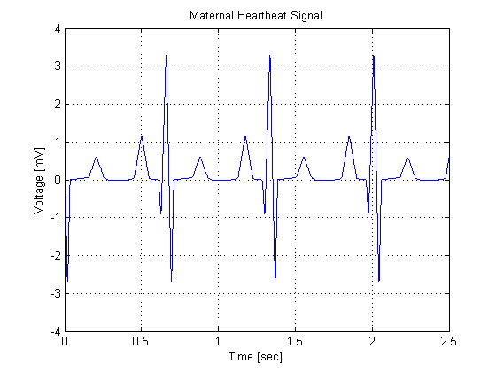
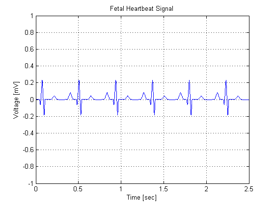
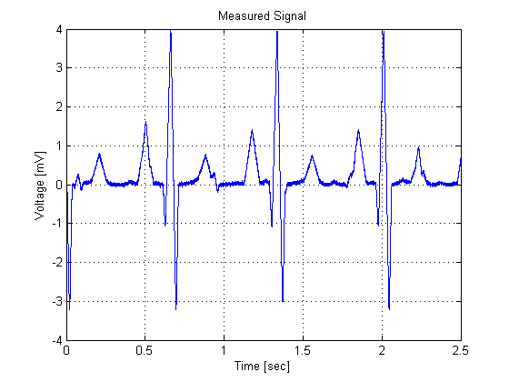
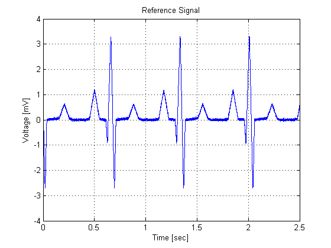
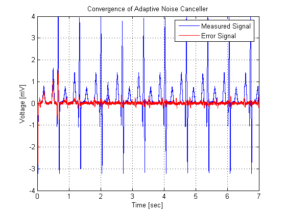
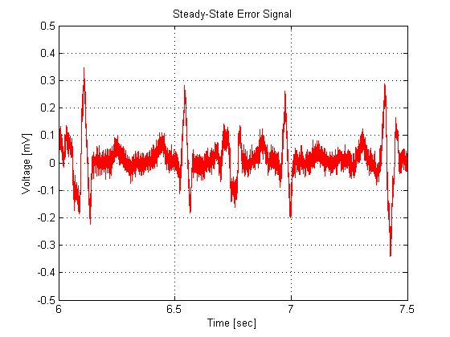

This demonstration illustrates the application of adaptive filters to noise removal using adaptive noise cancelling. In adaptive noise cancelling, a measured signal d(n) contains two signals: - an unknown signal of interest v(n) - an interference signal u(n) The goal is to remove the interference signal from the measured signal by using a reference signal x(n) that is highly correlated with the interference signal. The example considered here is an application of adaptive filters to fetal electrocardiography, in which a maternal heartbeat signal is adaptively removed from a fetal heartbeat sensor signal. This example is adapted from Widrow, et al, "Adaptive noise cancelling: Principles and applications," Proc. IEEE, vol. 63, no. 12, pp. 1692-1716, December 1975.
Author(s): Scott C. Douglas
In this example, we shall simulate the shapes of the electrocardiogram for both the mother and fetus. The following commands create an electrocardiogram signal that a mother's heart might produce assuming a 4000 Hz sampling rate. The heart rate for this signal is approximately 89 beats per minute, and the peak voltage of the signal is 3.5 millivolts.
x1 = 3.5*ecg(2700).'; y1 = sgolayfilt(kron(ones(1,13),x1),0,21); n = 1:30000; del = round(2700*rand(1)); mhb = y1(n + del); t = 0.00025:0.00025:7.5; plot(t,mhb); axis([0 2.5 -4 4]); grid; xlabel('Time [sec]'); ylabel('Voltage [mV]'); title('Maternal Heartbeat Signal');
The heart of a fetus beats noticeably faster than that of its mother, with rates ranging from 120 to 160 beats per minute. The amplitude of of the fetal electrocardiogram is also much weaker than that of the maternal electrocardiogram. The following series of commands creates an electrocardiogram signal corresponding to a heart rate of 139 beats per minute and a peak voltage of 0.25 millivolts.
x2 = 0.25*ecg(1725); y2 = sgolayfilt(kron(ones(1,20),x2),0,17); del = round(1725*rand(1)); fhb = y2(n + del); plot(t,fhb); axis([0 2.5 -1 1]); grid; xlabel('Time [sec]'); ylabel('Voltage [mV]'); title('Fetal Heartbeat Signal');
The measured fetal electrocardiogram signal from the abdomen of the mother is usually dominated by the maternal heartbeat signal that propagates from the chest cavity to the abdomen. We shall describe this propagation path as a linear FIR filter with 10 randomized coefficients. In addition, we shall add a small amount of uncorrelated Gaussian noise to simulate any broadband noise sources within the measurement. Can you determine the fetal heartbeat rate by looking at this measured signal?
Wopt = [0 1.0 -0.5 -0.8 1.0 -0.1 0.2 -0.3 0.6 0.1]; d = filter(Wopt,1,mhb) + fhb + 0.02*randn(size(mhb)); plot(t,d); axis([0 2.5 -4 4]); grid; xlabel('Time [sec]'); ylabel('Voltage [mV]'); title('Measured Signal');
The goal of the adaptive noise canceller in this task is to adaptively remove the maternal heartbeat signal from the fetal electrocardiogram signal. The canceller needs a reference signal generated from a maternal electrocardiogram to perform this task. Just like the fetal electrocardiogram signal, the maternal electrocardiogram signal will contain some additive broadband noise.
x = mhb + 0.02*randn(size(mhb)); plot(t,x); axis([0 2.5 -4 4]); grid; xlabel('Time [sec]'); ylabel('Voltage [mV]'); title('Reference Signal');
The adaptive noise canceller can use most any adaptive procedure to perform its task. For simplicity, we shall use the least-mean-square (LMS) adaptive filter with 15 coefficients and a step size of 0.00007. With these settings, the adaptive noise canceller converges reasonably well after a few seconds of adaptation--certainly a reasonable period to wait given this particular diagnostic application.
h = adaptfilt.lms(15,0.00007); [y,e] = filter(h,x,d); plot(t,d,'b',t,e,'r'); axis([0 7 -4 4]); grid; xlabel('Time [sec]'); ylabel('Voltage [mV]'); title('Convergence of Adaptive Noise Canceller'); legend('Measured Signal','Error Signal');
The output signal y(n) of the adaptive filter contains the estimated maternal heartbeat signal, which is not the ultimate signal of interest. What remains in the error signal e(n) after the system has converged is an estimate of the fetal heartbeat signal along with residual measurement noise. Using the error signal, can you estimate the heart rate of the fetus?
plot(t,e,'r'); axis([6 7.5 -0.5 0.5]); grid; xlabel('Time [sec]'); ylabel('Voltage [mV]'); title('Steady-State Error Signal');